Anime Scenes
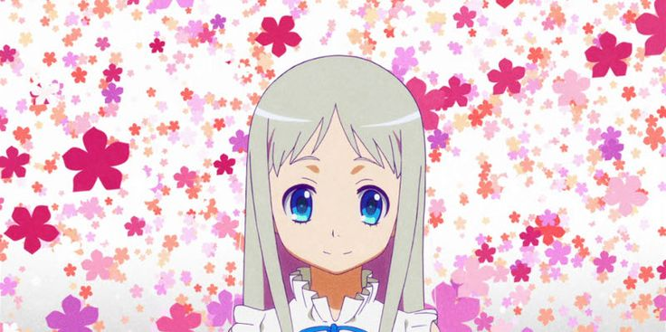
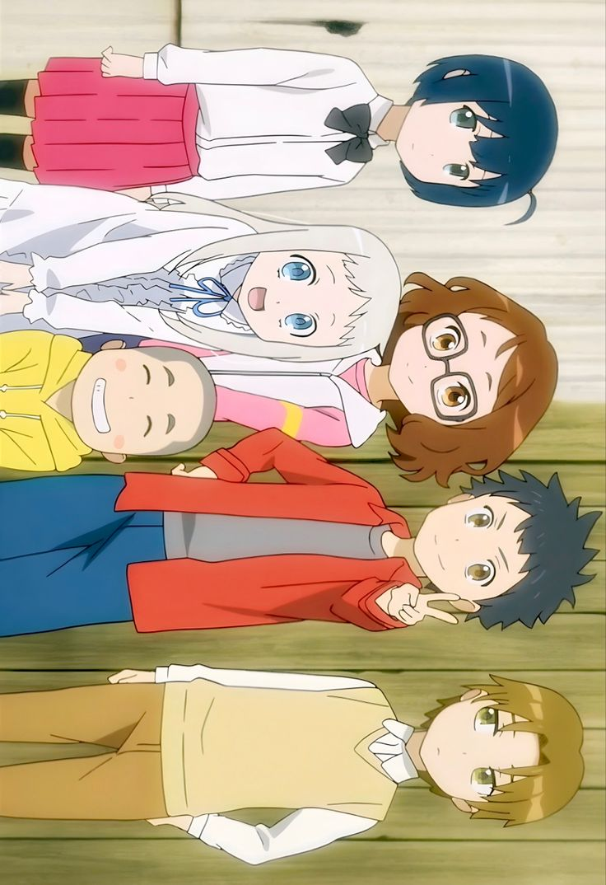
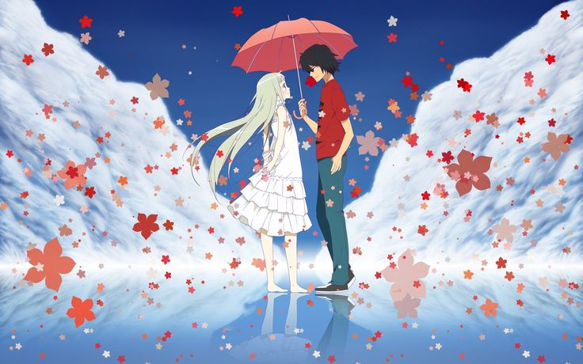
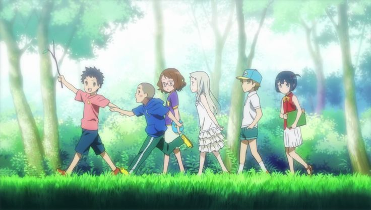
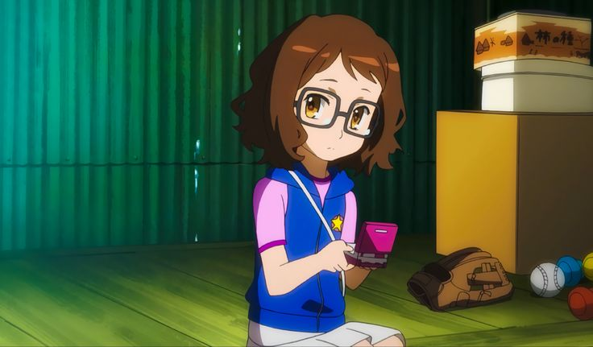
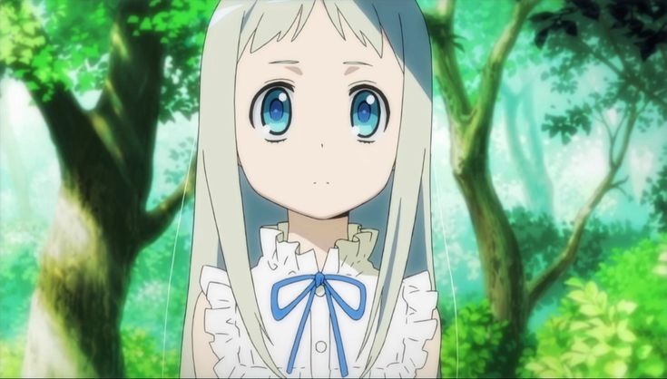
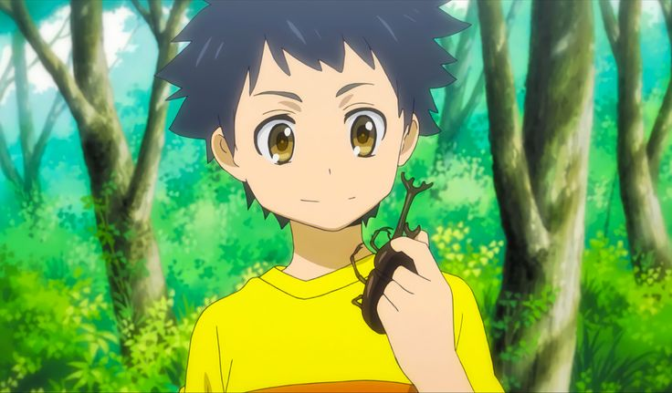
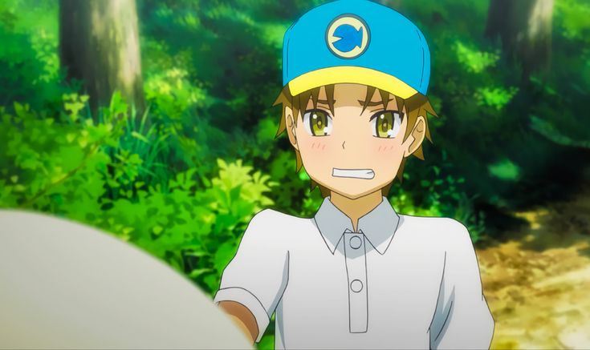
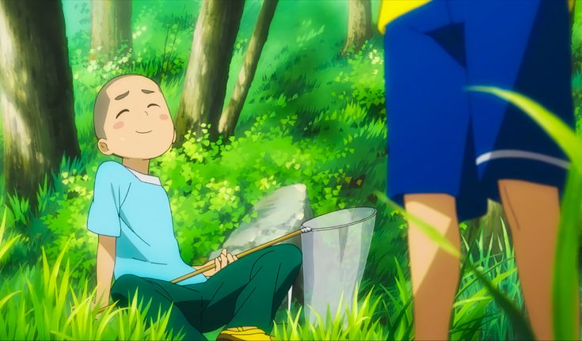
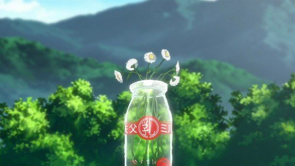
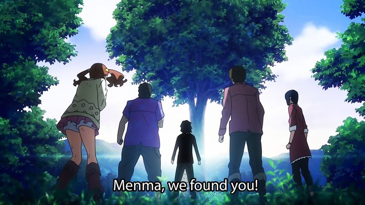
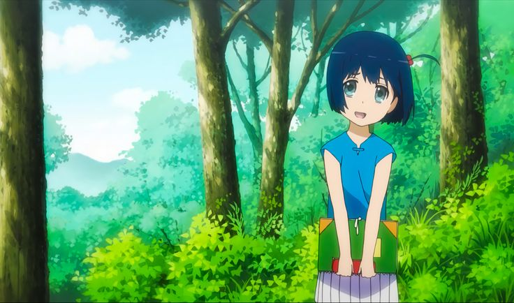
“I love you. It’s the ‘I want to marry you’ type of I love you.”
Anime Studio: A-1 Pictures
Director: Tatsuyuki Nagai
Producer: Hiroyuki Shimizu
Distributor: Aniplex
Rating: ★ 8.1 / 10
Source: Original Story
Release Date: April 15, 2011
Episodes: 11 Episodes
Music by: Remedios
Status: Finished
Country: Japan
Language: Japanese
Genre: Drama, Supernatural
Awards: Animation Kobe Award